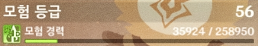
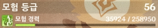

info for genshin impact
정보
+ 용어 정리 

what to do at certain Adventure Ranks (AR) (youtube, english)
특정 모험랭크 별 해야할 일들 (유튜브, 한국어)
캐릭터 / characters
+ 라이덴 쇼군 / Raiden Shogun 육성1: 원충 서포터
육성1: 원충 서포터
성유물 / artifacts
"순위"
이 게임은 pve 게임이기 때문에 굳이 순위를 고를 필요가 없지만,정 게임을 편하게 하고 싶다면 이 순위들을 따르면 된다.
ver 3.4 순위 (game8, english) - 23.02.07 작성